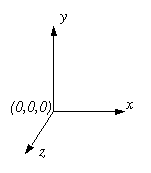

| Visual Reference |
| Visual Reference |
The interactive development environment you will use is called "IDLE."
When using VPython the display window shows objects in 3D.
(0,0,0) is in the center of the display window . The +x axis runs to the right, the +y axis runs up, and the +z axis points out of the screen, toward you.
x, y, and z are measured in whatever units you choose; the display is automatically scaled appropriately. (You could, for example, create a sphere with a radius of 1E-15 m to represent a nucleus, or a sphere with a radius of 1E6 m to represent a planet, though it wouldn't make sense to put both of these objects in the same display!)
The output of any -print- statements you execute in your program goes to the Output window, which is a scrolling text window. You can use this window to print values of variables, print lists, print messages, etc. Place it where you can see messages in it.
If you type the following simple program into the code window in IDLE and run it (press F5, or use the Run menu), you will see a display like the one shown in the figure below.
from visual import *
redbox=box(pos=vector(4,2,3), size=(8.,4.,6.),color=color.red)
greenball=sphere(pos=vector(4,7,3), radius=2, color=color.green)
Visual is the name of the 3D graphics module used with the Python programming language. VPython is the name of the combination of the Python programming language, the Visual module, and the development environment IDLE.
In the display window, click and drag with the right mouse button (hold down the shift key on a Macintosh). Drag left or right, and you rotate around the scene. To rotate around a horizontal axis, drag up or down with the right mouse button. Click and drag up or down with the middle mouse button to move closer to the scene or farther away (on a 2-button mouse, hold down the left and right buttons; on a 1-button mouse, hold down the CTRL key).
The graphical objects you create, such as spheres, boxes, and curves, continue to exist for the duration of your program, and the Visual 3D graphics module will continue to display them, wherever they are. You must give each object a name (such as redbox or greenball in the example above) if you wish to refer to it again later in your program. All objects have attributes: properties like greenball.pos (the position of the sphere), greenball.color, and radius or other size parameter. If you change an attribute of an object, such as its position or color, Visual will automatically display the object in its new location, or with its new color.
You can set the values of attributes in the "constructor" (the code used to create the object), and you can also modify attributes later:
greenball.radius = 2.2
In addition to the built-in set of attributes, you may create new attributes. For example, you might create a sphere named moon; in addition to its radius and location, you might give it attributes such as mass (moon.mass) and momentum (moon.momentum).
Not all objects in Visual are visible objects. For example, Visual allows you to create 3D vector quantities, and to perform vector operations on them. If you create a vector quantity called a, you may refer to its components as a.x, a.y, and a.z. To add two vectors, a and b, however, you do not need to add the components one by one; Visual will do the vector addition for you:
a = vector(1.,2.,3.)
b = vector(4.,5.,6.)
c=a+b
If you print c , you will find that it is a vector with components (5.,7.,9.).
d = 3.*a # d is a vector with components (3., 6., 9.)
d = mag(c) # d is a scalar
z = mag(c)**2 # you can't square a vector; just its magnitude
f = cross(a,b) # cross product
g = dot(a,b) # dot product
h = norm(a) # normalized (unit) vector
The attributes of Visual objects can be vectors, such as velocity or momentum.
The first line of your program must be:
from visual import *
A comment in a Python program starts with "#"
# this line is a comment
Variables can be created anywhere in a Python program, simply by assigning a variable name to a value. The type of the variable is determined by the assignment statement.
a = 3 # an integer
b = -2. # a floating-point number
c = vector(0.4, 3e3, -1e1) # a vector
Earth = sphere(pos=(0,0,0), radius=6.4e6) # a Visual object
bodies = [ship, Earth, Moon] # a list of objects
Basic Visual objects such as sphere() and box() have a set of attributes such as color, and you can define additional attributes such as mass or momentum. Other objects, such as vector(), have built-in attributes but you cannot create additional attributes. Numbers, lists, and other built-in objects do not have attributes at all.
Division of integers will not come out the way you may expect, since the result is rounded down to the nearest integer. Thus:
a = 2/3
print a # a is 0
To avoid this, place a decimal point after every number, like this:
b = 2./3.
print b # b is 0.6666667, as expected
We recommend putting the following statement at the start of your program, in which case 2/3 will be 0.6666667; there are two underscores before and after the word "future":
from __future__ import division
x**2 # Not x^2
10**-2 gives an error; use 10.**-2
If, elif ("else if"), else:
if a == b: # see table of logical expressions below
c = 3.5 # indented code executed if test is true
elif a < b:
c = 0. # c will be set to zero only if a < b
else:
c = -23.2
|
== |
equal |
|
!= |
not equal (also <>) |
|
< |
less than |
|
> |
greater than |
|
<= |
less than or equal |
|
>= |
greater or equal |
|
or |
logical or |
|
and |
logical and |
|
in |
member of a sequence |
|
not in |
not sequence member |
A list is an ordered sequence of any kind of object. It is delimited by square brackets.
moons = [Io, Europa, Ganymede, Callisto]
The function "arange" (short for "arrayrange") creates a sequence of numbers:
angles = arange (0., 2.*pi, pi/100.)
# numbers from 0. to 2.*pi-(pi/100.) in steps of (pi/100.)
numbers = arange(10) # integer argument -> integers
print numbers # [0,1,2,3,4,5,6,7,8,9]
The simplest loop in Python is a "while" loop. The loop continues as long as the specified logical expression is true:
while x < 23:
x = x + vx*dt
To write an infinite loop, just use a logical expression that will always be true:
while 1==1:
ball.pos = ball.pos + (ball.momentum/ball.mass)*dt
Since the value assigned to a true logical expression is 1, the following also produces an infinite loop:
while 1:
a = b+c
Infinite loops are ok, because you can always interrupt the program by choosing "Stop Program" from the Run menu in IDLE.
It is also possible to loop over the members of a sequence:
moons = [Io, Europa, Ganymede, Callisto]
for a in moons:
r = a.pos - Jupiter.pos
for x in arange(10):
# see "lists" above
...
for theta in arange(0., 2.*pi, pi/100.):
# see "lists" above
You can restart a loop, or terminate the loop prematurely:
if a == b: continue # go back to the start of the loop
if a > b: break # exit the loop
To print a number, a vector, a list, or anything else, use the "print" command:
print Europa.momentum
To print a text message, enclose it in quotes:
print "We have just crashed on the Moon with speed", v, "m/s."
See The Visual Module of VPython for detailed descriptions of all aspects of Visual.
We have summarized a very small subset of the Python programming language. Extensive Python Documentation is provided here, and there is additional information at the Python website, but much of this information assumes that you already have lots of programming experience in other languages. We recommend the following book to those who want to learn more about Python: Learning Python, by Mark Lutz & David Ascher, 1999, O'Reilly.
| Visual Reference |